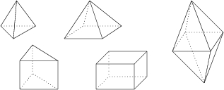

Combinatorial types
The 3-dimensional lattice Delaunay polytopes have been classified by E. Fedorov in 1885 (see below). I enumerated them in dimension 6.

| Dim | Count | Author |
|---|---|---|
| 2 | 2 | Dirichlet (1860) |
| 3 | 5 | Fedorov (1885) |
| 4 | 19 | Erdahl-Ryshkov (1987) |
| 5 | 138 | Kononenko (1997) |
| 6 | 6241 | Dutour (2004) |
L M. Dutour, The six-dimensional Delaunay polytopes, European Journal of Combinatorics 25 (2004) 535--548.